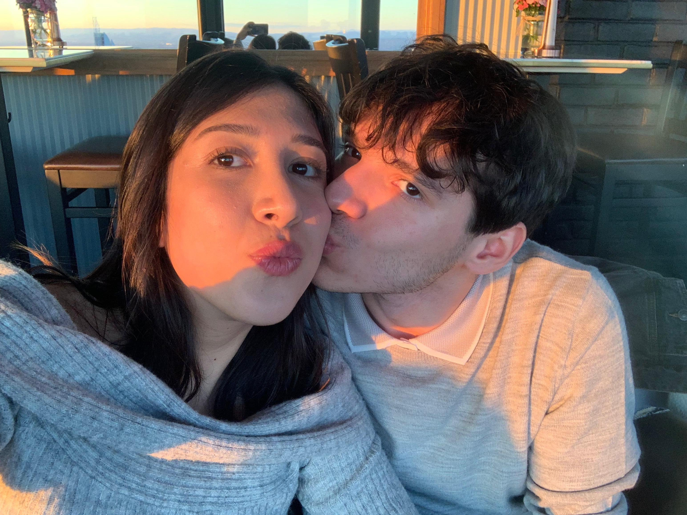

Sen Benim Her Şeyimsin:
MUTLULUĞUM
İlk fotoğrafımız... İlk planlı aktivitemiz sinemaya gittikten sonra çıkışta çekildiğimiz o foto.
Sana ilk çiçek aldığım gün.Kızılay ve Sıhhiye'de sabah saat 8'de tek açık olan çıçekçiyi bulmuştum ve sana gül almıştım. Elifsu tabikide sosisli olsun daha çok isterdi ama çiçekle yetinmek zorunda kaldı ve o aylar sürecek n*h çekme akımı başlamış oldu.
Elifsu'nun ağzından fav mekanım if sokak ve krispy cream açılmış yhaa duyan Aybos if sokak gezisi planlamıştır. Ayrıca kafasında bir bonus planıda vardır. İf sokağa çiçek getirtmek.Her şeyi planlamıştır adresi,kuryeyi herkesi ayarlamıştır tek duyması gereken Elifsu'nun tahmini varış saatidir. Keyfinedüşkünsu aynı gece birde kızılcık şerbo izleme seansı olunca ve keyifli keyıfli oje sürerken,arka planda gölbaşından çıkacağı saati crispy sırasını çiçek teslimat ayarlarını düşünen Aybosun popisinden ter damlamaktadır.Sonraki gün yine her şeyden habersiz Elifsu geç kalmış Aybos çiçek kuryesinin gelmek üzereyiz mesajıyla kalp krizi geçirmiş ama yineden kuryeye bir şekilde ulaşarak durumu çözmüştür. Arka planda acele etsin diye elfisuya hastayım diye yalan söylemek zorunda bile kalmıştır.

Planlanan o Esko planı bff couple ile gerçekleştirilmiş ve Aybosun o günden bugüne telefonunun ekran resmi olacak olan o efsane foto ortaya şans eseri çıkmıştır.
Dizayn haftasından çok sıkılmış olan askmla açık hava sinema gecesi pikniğimizden
Yalın konserimizz
Gölbaşı'na gidip gelmekten sıkılan Aybos Elif'ini daha çok görmek için yazın ev tutmayı planlayan arkadaşlarını örgütleyip 1 ay içinde ev tutmuştur. Eve ilk kez ziyarete gelecek olan Elifsuya tabikide Aybos sabah erkenden kalkıp taze çiçekler toplamıştır.
Evimize ilk mobilyalar geldikten sonraki buluşmamızdan diji foto mak ile çekildiğimiz o foto.
İlk baş başa büyük gezimiz.İstoooo.Hayatımın şuana kadar açık ara en iyi gezisi.Dolu dolu 3 gün istanbul ve biz.
Dünyanın en taşş***lı kadını(fotoya dikkatli bakınız) edoş erdemle Dünyanın en güzel kızı elifsu buluşmasını gerçekleştirdik.
Aybos favori kombine çantasıyla poz veriyor
Asktanemi mezun ettikkkk veee bu bu bu güzellik nedir arkadaş elbise giymesi(bide beyaz giymişş kırmızıyı giyse💦💦💦) ysaklanmalı
Elifsuya 100 ytllik maske alıp kendisi 25 ytllik maske yapınca suratı zımpara olan aybos pozu.
Almanya yolcusu kalmasınn son fotomuz gitmeden.
Temaslı aska bir süre mola çünkü I am happy to share that I started working at Nagel-Group in the Food Logistics-Product Department. Elifsuyu fotoğraflardan sevmeli 57 gün.
Tr yetmişiyormuş gibi Deutschland da gözleri kamaştıran o güzellik abidesi.
Almanyadan misafirimiz var komşularr. Göksu günümüz efendim bostons ziyaretiyle başladı ve elifsunun devasa bir muzu sütlü çikolataya düşürmesinden dolayı sütlü çikolatamız yüzde 98 oranında azaldı.
Devamında çok zevkli bir yunus turu yapıldı tabiki kaptan aybos elifsuya tek tur dahi pedal çevirtmedi.
🥳🥳🥳Elif doğdu iyiki doğdu iyiki benim oldu iyiki varsın iyiki hayatımdasın iyiki her şeyim oldun iyiki benimle oldun🥳🥳🥳
Maşallah şu çiftin güzelliğine bakk allah ayırmasın diyelim nazar değmesin diyelim 🧿🧿🧿.
Uzun bir sınav molasının ardından Aybos ve Elifsu mutfaklara geri dönüyordu ve alışveriş sırasındaki şu bebeğin tatlılığı bakın bunu yemede ne yap şimdi. Çen onları alcanda zencefilli kurabiye mi yapçann. Yazarken tekrar hayran olmam. İşte böyle vurulmuşum kalpten sanaa.
Aybosla Elifsu çanta almaya gider ama Yarabbim şu güzelliğe seksiliğe bir bak. bunu yaratırken hiç mi acımadın etraftakilere hergün görecekler ama o gidipte Aybosu öpcek. Bak şimdi kendi kendime tribe girdim askm sana çok bakmıyorlardır dimi.dimi
Ara tatilden sonra Aybosla Elfi erken biten bir günde Altınpark yürüyüşü yapar. Ve GÜNEŞ'in öptüğü şu fotoğraf ortaya çıkar.41milyon kere maşallah şu tatlılığa güzelliğe🧿🧿🧿

Veeee 365 gün 6 saattir birbirimizin olmamızın yıldönümü. Bundan 1 yıl 1 gün önce hayatım herhangi bir sıradanlıkta sürüyordu ama sen geldin seni gördüm, bana bir GÜNEŠgibi doğdun ve ben dünyadaki en mutlu insan oldum. bu günden itibaren her gece son düşüncem sen her sabah ilk aklıma gelen yine sen oldun. sonsuza kadarda böyle olacak ve seni hep her şeyden çok seveceğim
41 milyon kere daha maşallah şuna bak yaa. Heykeltıraş elinden çıkma sanki kusursuz, müthiş bu kadar güzelde olunmazz
Her gün evden çıkmadan salonda profil fotosu çıkartıp gitceğimiz yere geç kalan Elifsu koyuyorum buraya. Bu fotonun çekildiği günlerde her gün yeni profil fotosu çıkıyodu. Yaaa işte benim sevgilim öyle güzeldir her gün her haliyle.
Bir gün Elifsu saçını kendi kendine kesip yanlışlıkla kahküllü prenses oldu. Zaten saçına yaptığı şeyler sonuçta istemsizce şaheser dönüşüyordu hep ve yine aynısı oldu. Şu saçların bebekliğine bak. Liseliye döndü bebek olduu.
ASHGFKSDFHAKHSDKFAHKFKAJSDHFKJASKDFJKHASKDFHahflkjshfhasdflhalksA. Adriana gelsinde güzellik görsün benim sevgilim bir başka güzel.
Profil fotosu akımının son başyapıtı. Kahküllü, tatlı bakışlı, yan profilden bakan(öpücüksüz poz) ELİF.
SEN BENİM HER ŞEYİMSİN. SENİN OLMADIĞIN BİR HAYATI HAYAL DAHİ EDEMİYORUM VE ASLA DA ETMEK İSTEMİYORUM. SEN BENİM İÇİN ZAMANIN KENDİSİSİN. SEN YOKKEN PİLİ BİTMİŞ BİR SAATTEN FARKSIZIM. TİKLEMELER KALP ATIŞLARIM GİBİ DURMUŞ. SENİ SEVİYORUM KELİMELERİN ULAŞAMAYACAĞI KADAR DERİNDEN, TÜM VARLIĞIMLA. DİLERİM Kİ ASLA CAYMAZSIN BENİM OLMAKTAN.